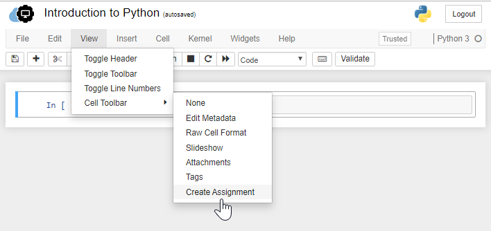
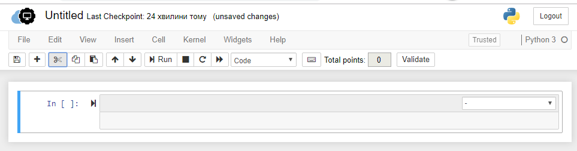
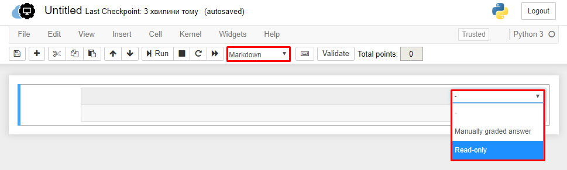
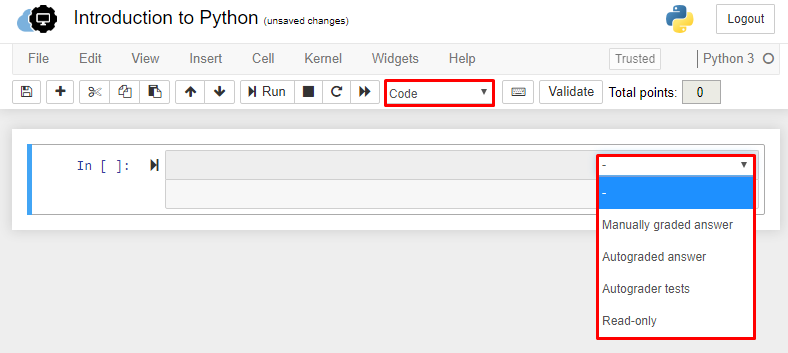

How to create the notebook based assignment?¶
We create a notebook, Python 3 in this case, and then enable the “Create Assignment” cell toolbar. For the last, follow the next steps: click “View” on the menu bar selecting > Cell Toolbar > Create Assignment.
{kind=link}
Selecting the “Create Assignment” creates a cell which by default has a dropdown menu with the “-” item selected.
{kind=link}
For markdown cells, there are two additional options to choose from, either “Manually graded answer” or “Read-only”:
{kind=link}
While for code cells, there are four options to choose from, including “Manually graded answer”, “Autograded answer”, “Autograder tests”, and “Read-only”:
{kind=link}
These options mean 4 types of the following cells:
- Read-only cells are not edіtable by the students and are used prіmarіly to provіde students with іnstructіons on how to complete the assіgnment.
- Autograded Answer cells that are going to be filled in by the students putting the code
- Autograder Tests cells mean the unit tests that the student’s answer will have to pass
- Manually Graded Answer is used for solutions that cannot be unit tested (such as visualizations, LaTex, or paragraph responses) or where unit tests aren’t quite ready for release; the option that must be manually graded by an instructor